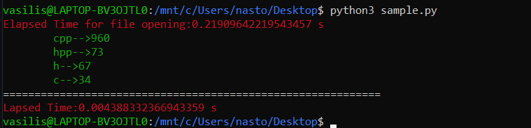
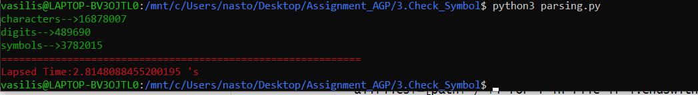

Assignment
AGP
This project is maintained by vasnastos
2η Εργαστηριακή Άσκηση Αρχές Γλωσσών Προγραμματισμού
ΖΗΤΟΥΜΕΝΑ ΕΡΓΑΣΙΑΣ
- Άνοιγμα και περιήγηση στον φάκελο oop-master
- Φάκελος oop-master:oop-master
- Εύρεση αρχείων από φάκελο και υποφακέλους με χρήση os.walk:code
def file_parser(): print(os.getcwd()) allfiles=[] try: for path,_,file in os.walk(top=parentroot,topdown=True): allfiles+=[path+'/'+l for l in file if l.endswith('.cpp') or l.endswith('.c') or l.endswith('.hpp') or l.endswith('.h')] except: print('Can not open folder oop-master') return list([]) return allfiles
- Κώδικας με χρήση αναδρομικής συνάρτησης για εύρεση όλων των αρχείων από τον φάκελο oop-master:code
def print_Dirs(masterpath): global pathfiles files=os.listdir(masterpath) for x in files: if os.path.isdir(masterpath+'/'+x): print_Dirs(masterpath+'/'+x) else: pathfiles.append(masterpath+'//'+x)
- Εύρεση αρχείων .c,.cpp,.h,.hpp
- Εύρεση Συμβόλων,Χαρακτήρων,Ψηφίων
- Εύρεση όλων των γραμμών κώδικα(εκτός κενών γραμμών)
- Πλήθος Εντολών if με συνθήκη ισότητας
- Source Code:code
def equality_statements(): def equality_statements(): counter=0 fls=[] pattern=re.compile('\s+if\s*\(\s*.+\s*==\s*.+\)|^if\s*\(.+==.+\)|\s*if\s*\(\s*\w+\s*\)') #if(x==5)-->NAI #check=true; #if(check)-->check==true #if(1) #std::count_if(v.begin(),v.end(),[](int &l) {return l==5}) #patternB=re.compile("\s*if\s*\(\s*\w+\s*\)") #|if\s*\(\s*(\w|\d)+\s*\) #if\s*\(\s*(\w|\d)+\s*\)-->if(k) αν k είναι boolean μεταβλητή η ένας αριθμός for x in files: with open(x,'r',encoding='utf-8',errors='ignore') as f: #counter+=len([m for m in f if(r.match('.*if(.+==.+).*',m))]) for k in f: fls+=pattern.findall(k) #fls+=patternB.findall(k) tm.cprint('\t If equality Statements found','blue') tm.cprint('==='*30,'red') id=1 for k in fls: k=k.replace(' ','').replace('\t','') tm.cprint(str(id)+'.'+str(k),'green') id+=1 print('\n\n') return len(fls)
- Source Code:code
- For Loops με μέγεθος 12 χαρακτήρες
- Εύρεση 3 κοινών ονομάτων μεταβλητών
- ΚΩΔΙΚΑΣ
# ΕΡΓΑΣΙΑ ΑΡΧΕΣ ΓΛΩΣΣΩΝ ΠΡΟΓΡΑΜΜΑΤΙΣΜΟΥ **ΟΝ/ΜΟ:**
**AM:**
> AN ΥΠΑΡΧΕΙ ΟΜΑΔΑ **ΟΜΑΔΑ** * ΜΕΛΟΣ 1 * ΜΕΛΟΣ 2 * ΜΕΛΟΣ 3 **Ο ΠΗΓΑΙΟΣ ΚΩΔΙΚΑΣ ΒΡΙΣΚΕΤΑΙ:**[source code](source_code.py)
**ΠΕΡΙΕΧΟΜΕΝΑ** 1. ΚΑΤΗΓΟΡΙΕΣ ΑΡΧΕΙΩΝ ``` ΑΠΟΤΕΛΕΣΜΑΤΑ ΓΡΑΨΤΕ ΑΠΟ ΕΔΩ ΚΑΙ ΚΑΤΩ ``` 2. ΓΡΑΜΜΕΣ ΚΩΔΙΚΑ ΕΚΤΟΣ ΚΕΝΩΝ ΓΡΑΜΜΩΝ ``` ΑΠΟΤΕΛΕΣΜΑΤΑ ΓΡΑΨΤΕ ΑΠΟ ΕΔΩ ΚΑΙ ΚΑΤΩ ``` 3. ΕΥΡΕΣΗ ΣΥΝΟΛΙΚΩΝ ΣΥΜΒΟΛΩΝ,ΧΑΡΑΚΤΗΡΩΝ,ΨΗΦΙΩΝ ``` ΑΠΟΤΕΛΕΣΜΑΤΑ ΓΡΑΨΤΕ ΑΠΟ ΕΔΩ ΚΑΙ ΚΑΤΩ ``` 4. ΕΥΡΕΣΗ IF STATEMENTS ΜΕ ΣΥΝΘΗΚΗ ΙΣΟΤΗΤΑΣ ``` ΑΠΟΤΕΛΕΣΜΑΤΑ ΓΡΑΨΤΕ ΑΠΟ ΕΔΩ ΚΑΙ ΚΑΤΩ ``` 5. ΕΥΡΕΣΗ FOR LOOPS ΜΕ ΠΑΝΩ ΑΠΟ ΔΩΔΕΚΑ ΧΑΡΑΚΤΗΡΕΣ ``` ΑΠΟΤΕΛΕΣΜΑΤΑ ΓΡΑΨΤΕ ΑΠΟ ΕΔΩ ΚΑΙ ΚΑΤΩ ``` 6. ΕΥΡΕΣΗ ΤΩΝ 3 ΠΙΟ ΚΟΙΝΩΝ ΟΝΟΜΑΤΩΝ ΜΕΤΑΒΛΗΤΩΝ ``` ΑΠΟΤΕΛΕΣΜΑΤΑ ΓΡΑΨΤΕ ΑΠΟ ΕΔΩ ΚΑΙ ΚΑΤΩ ``` ## ΣΥΝΟΛΙΚΑ ΑΠΟΤΕΛΕΣΜΑΤΑ 
> results.png-->link για δικια σας φωτογραφία.
> source_code.py-->link για δικιά σας φώτογραφία. - ΠΡΟΤΥΠΟ:Pattern
def filesbycategory():
counter={'cpp':0,'hpp':0,'h':0,'c':0}
starttime=time()
for x in files:
if re.match('.+\.cpp$',x):
#if x.endswith('.cpp'):
counter['cpp']+=1
elif x.endswith('.hpp'):
counter['hpp']+=1
elif x.endswith('.h'):
counter['h']+=1
else:
counter['c']+=1
for key in counter:
print(str(key)+'-->'+str(counter[key]))
endtime=time()
print('Lapsed Time:'+str(endtime-starttime)+' s')
ΑΠΟΤΕΛΕΣΜΑΤΑ

def Symbols_letters_Digits():
parser={'characters':0,'digits':0,'symbols':0}
patternC=re.compile('[A-Za-z]')
#\w
patternD=re.compile('\d')
if len(files)==0:
print('No input Data!!!Please Check you file Data')
return
start_time=time()
for x in files:
with open(x,'r',encoding="utf-8",errors='ignore') as f:
for k in f:
"""
f.readline()
while f.readline()!=None:
"""
#actualsd=k.replace(' ','').replace('\n','')
#actualsd=actualsd.strip()
chars=len(patternC.findall(k))
digits=len(patternD.findall(k))
"""
for ch in k:#Προσπέλαση χαρακτήρων αλφαριθμητικού
if ch.isalpha():
parser['characters']+=1
elif ch.isdigit():
parser[digits']+=1
else:
parser['symbols']+=1
#parser.update('characters',parser['characters']+1)
print(parser)
"""
parser['characters']+=chars
parser['digits']+=digits
parser['symbols']+=len(k)-(chars+digits)
end_time=time()
for x in parser:
tm.cprint(f'{x}-->{parser[x]}','green')
tm.cprint('=='*30,'red')
tm.cprint(f'Lapsed Time:{end_time-start_time} \'s','red')
ΑΠΟΤΕΛΕΣΜΑΤΑ

starttime=time()
linecounter=0
for i in files:
with open(i,'r',encoding="utf-8",errors='ignore') as f:
for j in f:
if len(j.strip())!=0:
linecounter+=1
tm.cprint('Lines of code:'+str(linecounter),'red')
tm.cprint('Elapsed Time for finding all lines of code:'+str(time()-starttime)+'\'s','red')
ΑΠΟΤΕΛΕΣΜΑΤΑ

found=0
pattern=re.compile('for\s*\(.+[;].+[;].+\)|for\s*\(.+[:].+\)')
for x in self.data:
with open(x,'r',encoding='ISO-8859-9') as f:
for m in f:
for m in [l for l in pattern.findall(m)]:
word=m.strip().replace(' ','')
word=word[4:len(word)-1]
word.replace(':','').replace(';','')
if len(word)>=12:
found+=1
return found
def CommonVars():
commonvars=dict({})
#Pattern for variables
unacceptable=re.compile('((const|static|static\sconst)\s+int\s+\w+\s*[=]\s*\w+\s*[;])')
pattern=re.compile('\s*int\s+\w+[;]')
patternA=re.compile('(\s*int\s+\w+([,]\w+)*[;])')
patternB=re.compile('(\s*int\s+\w+([=]\w+)+[;])')
patternC=re.compile('(\s*int\s+\w+\s*[=]\s*\w+\s*([,]\s*\w+\s*[=]\s*\w+\s*)+[;])')
matches=[]
for x in files:
with open(x,'r',encoding='utf8',errors='ignore') as f:
lines=f.readlines()
for k in lines:
word=k
if word.startswith('//') or word.startswith('#'):
continue
for l in unacceptable.finditer(k):
word=k[0:l.start()]+k[l.end():]
for n1 in pattern.findall(word):
if len(n1)==0: continue
word=n1.replace(';','').strip()
spdat=re.split('\s',word)
if spdat[1] in commonvars:
commonvars[spdat[1]]+=1
else:
commonvars.update({spdat[1]:1})
for n2 in [l[0] for l in patternA.findall(word)]:
word=n2.replace(';',' ').strip()
data2=re.split('[,\s]',word)
for j in data2:
if j.strip()=='int':
continue
if j.strip() in commonvars:
commonvars[j.strip()]+=1
else:
commonvars.update({j.strip():1})
for n3 in [l[0] for l in patternB.findall(word)]:
word=n3.strip().replace(';','')
data3=[x for x in re.split('[\s=]',word) if x.strip()!=';' and re.search('^\s+$',x)==None]
counter=0
for j in data3:
counter+=1
if len(data3)==int(counter):
continue
if j.strip()=='int':
continue
if j.strip() in commonvars:
commonvars[j.strip()]+=1
else:
commonvars.update({j.strip():1})
for n4 in [l[0] for l in patternC.findall(k)]:
word=n4.strip().replace(';','')
data4=[x.replace(' ','') for x in word.split(',')]
for j in data4:
checkstr1=word.split('=')[0]
checkstr=checkstr1.split(' ')[1]
if checkstr in commonvars:
commonvars[checkstr]+=1
else:
commonvars.update({checkstr:1})
tops=sorted(commonvars.items(),key=lambda elem:elem[1])
#print(commonvars['j'])
for i in range(len(tops)-1,len(tops)-4,-1):
print(f'{tops[i][0]}-->{tops[i][1]}')